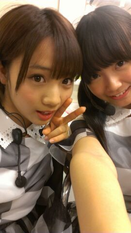
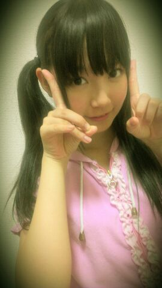
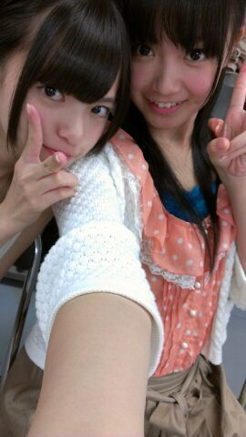
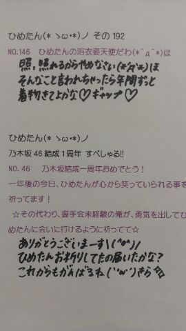
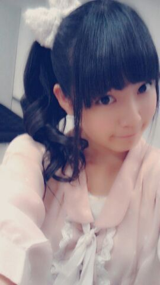
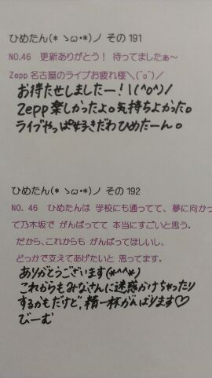
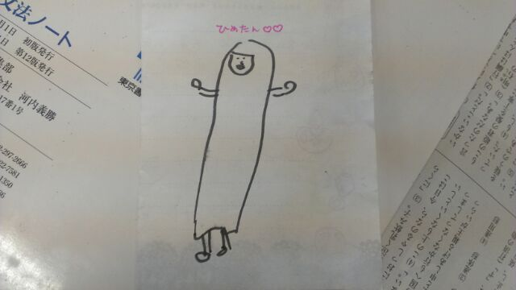
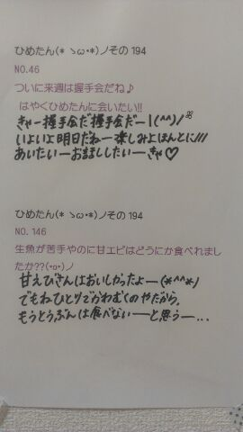

16人のプリンシパル6日目
プリンシパルには選ばれなかったけど
楽しかったです＼(^^)／
選ばれたらいいなって思うけど、
とりま順位とか気にしないで
明日も楽しみます＼(^^)／
今日は、プリンシパルたちに
おめでとうって笑顔で
言ってあげられてよかったかな＊
アドバイスいただいたのにもかかわらず
今日はちょっと滑っちゃったかなー
てへぺろ。
総括は最後に、ね

(＊´・ω・＊)ひめたん
16人のプリンシパル
公演4日目、ひめたんにとっての初日。
11位に選んでいただきました。
投票してくださった方、
本当に 本当にありがとうございました！

2部は本当に夢のような時間でした。
本当に嬉しかった。
純粋に嬉しかった。
審査員のみなさん、
今日１日ひめたんの夢を叶えてくださって
ありがとうございました(*^^*)
選抜のみんなは普段こんな景色で、
こんな心持ちで、こんなこと考えながら
パフォーマンスしてるんだなって。
ひめたんもはやくシングルの選抜入って、こんなふうに踊りたいってモチベーションに繋がりました(^^)
明日以降も、回を重ねるごとにパワーアップしていけるよう頑張ります！
ひめたんには、一緒に自己PRしてくれるかわいい仲間がいるから。照れ
そしてメンバーがいて、
ひめきゅんのみなさんがいて、
乃木坂ふぁみりーさんがいるから。
ぽじてぃぶ＼(^^)／
ブログでアドバイスくださったみなさん、ありがとうございました！
本番前にちゃんとしっかり読んだよ。
もっともっと進化していきたいので、今日行ったよーって方で気付きとかアドバイスとかお願いします！
ひめたん、おめでとう。
メンバーさんが祝福してくれました。
本当に、乃木坂はみんないい子ばっかりです(´；ω；`)
昨日までいなかったひめたんをあたたかく迎えてくれたみんなありがとう。
千秋楽まで、ちまの分まで精一杯頑張ります＼(^^)／
ひめたんの11位。妹の13位。
ままの最高の誕生日プレゼントだよって。
ぱーてぃーや(・ω・)！
あ、その200は公演が終わってから♪
(＊´・ω・＊)ひめたん
ひめたん公演初日うぃる(・∀・)！
はよみんなと一緒に舞台立って、歌いたいなー踊りたいな。
ちま(樋口日奈chan)3日間お疲れ様でした＊
とりあえず、初公演を楽しむ！これに尽きるわねー＼(^^)／
ぶろぐ書いたら、公演の内容をずらーと復習してはよ寝る∩^ω^∩
ぱわー貯めとかんとね！

 プリンシバルの役だったら、お気に入り、てか好きな役とかあるー？
プリンシバルの役だったら、お気に入り、てか好きな役とかあるー？
 16人のプリンシパルでどの役やってみたい？
16人のプリンシパルでどの役やってみたい？ どの役がいいとか言える立場じゃないし、どの役でも嬉しい(*^^*)
そのためにこの１週間全部のポジションできるようにって頑張って練習してきたから、どの役がきても大丈夫！
その成果が披露できるならどの役でもひめたんは嬉しいです＊
 ８月２９日僕の誕生日だったんだけど、（過ぎちゃった...笑）オレの誕生日4ヶ月と5日後だから前祝いお願い〜誕生日8月21日なんよ。あっ 俺の誕生日は8月11日だよー
８月２９日僕の誕生日だったんだけど、（過ぎちゃった...笑）オレの誕生日4ヶ月と5日後だから前祝いお願い〜誕生日8月21日なんよ。あっ 俺の誕生日は8月11日だよー８月生まれのみなさんー
ごめんなさい遅くなっちゃった(´；ω；｀)
お誕生日おめでとうございます＊
乃木坂の誕生日と同じ８月だねー！
これからも一緒に乃木坂の成長を見守っててくださいな。
そして来年もまた、お誕生日おめでとうってお祝いさせてくださいね
コメントしっかり見てるつもりなんだけど、もし抜けてる人がいたら教えてくださいね！
9月生まれの方も同様に、月末にまとめてコメントさせてください(´；ω；`)

明日がんばります！
おやすみなさい＼(^^)／
(＊´・ω・＊)ひめたん
個握わず
川後さんとmailわず！

ぴんくだお。
めるへんだお。
ひめたんりぼんだお。
今日はいろんなお話しました
久しぶりに会えて、元気もらったよー
公演のアドバイスとか
CBCや長崎やzeppの感想とか
はじめましてよろしくねーとか
真面目な超真面目な話とか
なんか今回の握手会は
いろいろ濃ゆかった気がする！
やっぱり夏休み挟んで
公演の最中だからかなー。
改めて思ったのが
こんなにたくさんの方にひめたんは支えられてるんだなって思った。
いやいつも思ってるけどね？
改めて、改めてそう思った。
んーそうね。
心配してくれてた方もいたみたいだからちょっとだけ素直になって話すと
正直、いろいろ悩む時期もあったのね。
それを表に出さないのがひめたんなんだけれども。
てか実際隠し通せてなくて、お見通しだったみたいだけれども。
でもね、もう大丈夫。
今度こそほんとに大丈夫だからね。
ぽじぴーす(＜・ω・＞)

 集中力あげるにはどうすればいいですか？
集中力あげるにはどうすればいいですか？ んーと、まず集中する前にしっかり寝ること食べることね。
何だろう、人によってすーごい別れる意見なんだけど、ひめたんの場合は
爆音でイヤホンで音楽かけて周りの音を遮断してからお勉強とかするのー
結構集中できるよー？
ブログ夜遅い時間に書いてるのかな？なんかね
学生さんみんなそうだと思うけど夏休みで生活リズムが狂っちゃって、夜がお昼みたーいなの＼(^^)／
はよ元に戻さなきゃー
鳥取はどうでしたか？美味しいもの食べた？砂丘は行った？鳥取楽しかったお！
砂丘、近いし行く？って話にもなったんだけど
結局いかなかったんだー(´；ω；｀)
ラクダさんいるってみんな言うけど、ここ日本だよ？ほんとにいるのー？
姫路城の写メありがとう♪今は工事中だから見えてるのは作業用の囲いかな？そっそーそゆこと！
完成したらまたゆっくり来たいなー(o>ω<o)
姫路城内の上山里丸と呼ばれる広場にある「お菊 井戸」いきましたか？あー見たみたみました！
めちゃ深くてびっくりした。
みしゃ(衛藤美彩chan)が「こんなとこ落とされたら痛いよー(>_<)」って。
こないだの合衆国でひめたん叫んでたりタオルひろげてたけど声援届いたかな？しっかりばっちり届きました！
ほんま楽しかったーよ。ありがとうございました(´；ω；｀)
ライティングってどんな事すんの？初めて聞いたよ！Writing。
ひたすら英語書きますー難しい＼(^O^)／
ゆみ姉先生の教え方どうだったの？丸つけして、自分で考えてみー？って。
せ、せんせい...
先生かっこいいよ先生。
ショートケーキとチョコレートケーキ、どっちが好きですか？んーチョコケーキ派かなあ♪
(＊´・ω・＊)ひめたん
渋谷PARCO劇場
16人のプリンシパル
すたーと＼(^^)／
ひめたんは、今回はちま(樋口日奈chan )とダブルキャストで、5日6日7日9日の4日間、全5公演の出演です。
このミュージカル公演は、私たち乃木坂46が結成されてから今までの集大成。
この一年間で学んだ表現力やパフォーマンスがぎゅーっと詰まってて、
初挑戦のミュージカル仕立てになってて、そして乃木坂が本来やろうとしてきた投票システムを導入してて。
稽古が始まったのがzeppで発表されてからの短期間。
初めてのことばかり不安だし、時間がなくて、酷なことだってのもわかってて。
っていつもみたいにネガティブになってると思ったかしら？にや
いやいやいやいや
乃木坂のステップアップのための試練じゃん！
ひめたんはいつも通り一生懸命頑張りますよーポジティブ＼(^^)／
今日行った方はわかるかなー
いやーがちなのよ。ほんとにがちなの←
あーそしてそして
新学期、始まりました！
友達がまた似顔絵描いてくれたんだけど
もう上手すぎて似すぎて感動したから
みなさんにも見てもらいたくて。///
感想待ってる∩^ω^∩＊

 夏休みももう終わりだねー。 宿題は終わったかな？？
夏休みももう終わりだねー。 宿題は終わったかな？？これでも期限厳守の人だから、
とりあ今日ださんといけんのはちゃんとだしたよ(^^)
あと月曜提出のが残っとるけ、このあと頑張ります///
マスク族になりつつって大丈夫？ 予防とかならいいけど体調悪いのカナ？マスク写メ可愛い！待受にしてもいいですか？（照） あーマスク族って、風邪ひいたとかではまったくなくて
マスクしてると落ち着くからしてるの！
もーね、元気すぎてびっくりするくらい元気だから大丈夫よー
ありがとう(о´∀`о)
「お人形さんになりたいんだがどうしたらいいのかなの会」ってあと、誰がいるの？あしゅしゅに相談てことは、あしゅはメンバーじゃないんですか？？ひめたんだけですか？メンバーがいたら(入会したら)教えて下さい！ 「お人形さんになりたいんだがどうしたらいいのかなの会」会長ひめたん、副会長あしゅりんですか？
えとね、今はひめたんひとりのはずよ。
とうぶんは別に募集もする予定ないんだがねー
だって乃木坂にふたりもお人形いたらだめじゃーん(・∀・)!
なんでお人形さんになりたいの？いつみてもかわいいから。
これに尽きます。
あの〜僕もお人形さんになりたいんだがどうしたらいいのかなの会に入会したいんですけど〜、男性は受け付けていませんよね？笑あらーほんとに？かわいーい(*^^*)
ちょっとどうにかして受け付けらんないか調べてみるから
しばーしお待ちくださいな＊
それはお雛様かフランス人形系かどっちなんやろ？？笑 フランス人形さんが近いかなー
んでも新ジャンルを確立しなきゃね(*^^*)/

明日の個握楽しみー！
よろしくお願いします＊ではねー
(*´・ω・*)ひめたん